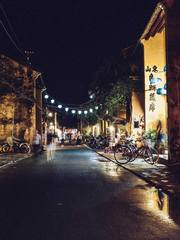

November
2026
31 kept. 13 left on Sunday.
This week
Scroll · tap to open
The month
31 kept · 2 rolls
Share the month
Rolls
The shelf ›
Diary
Rolls
Story 9:16
Post 4:5
Show safe zones
Press and hold the picture to save it.
Done